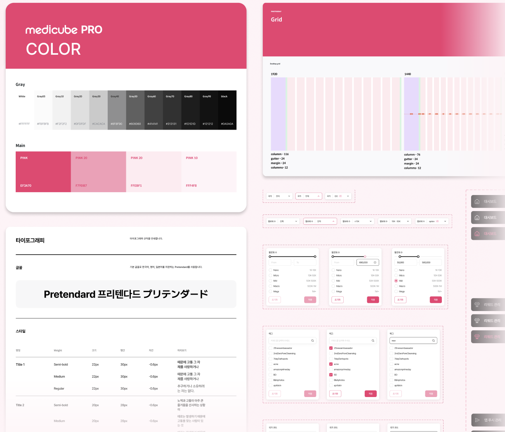
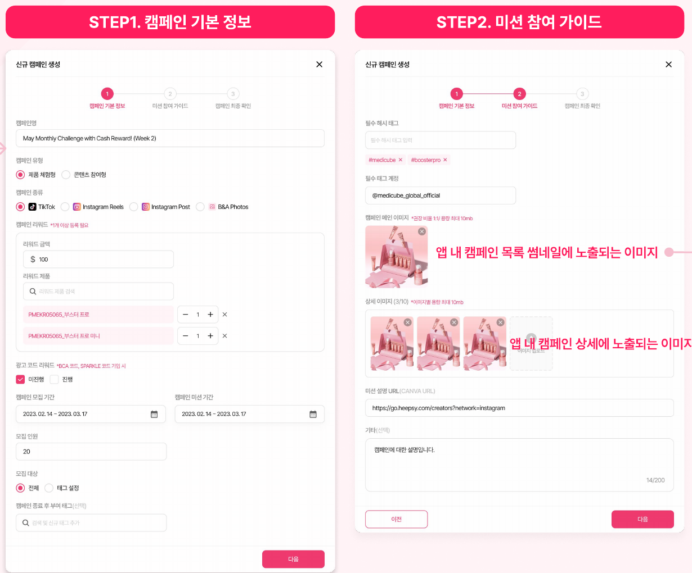
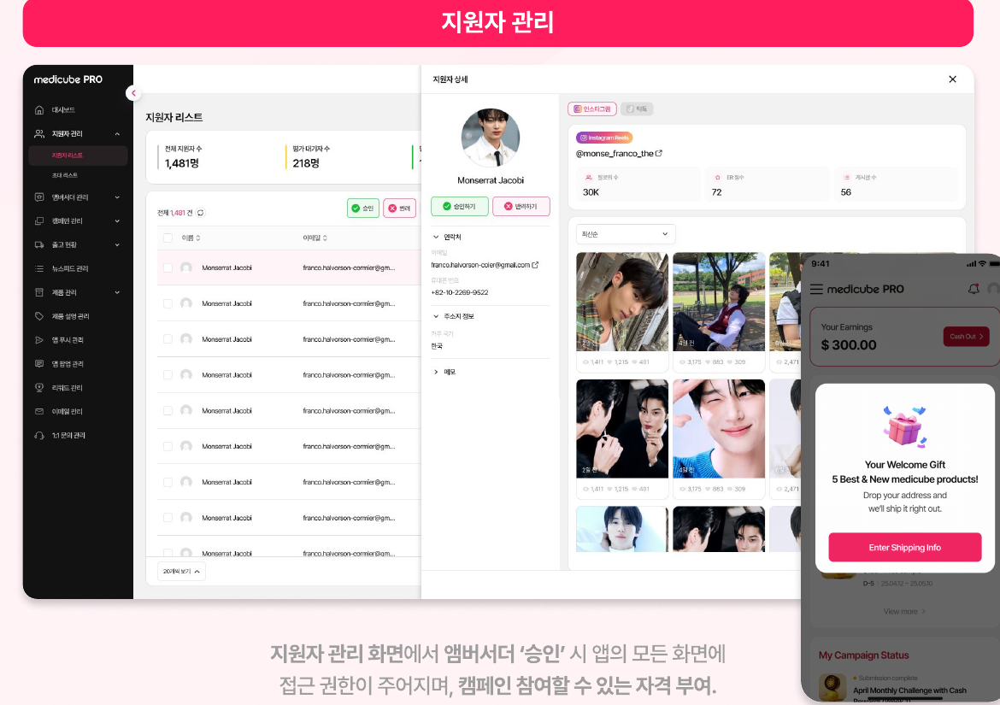
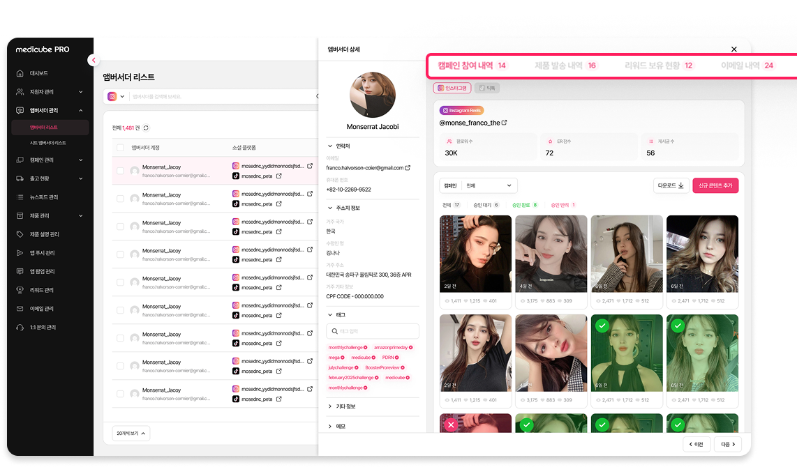
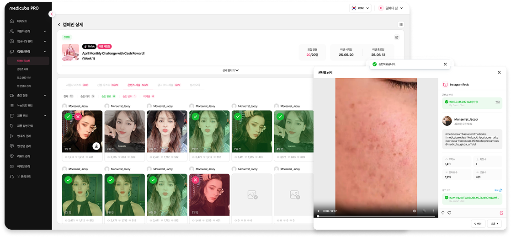
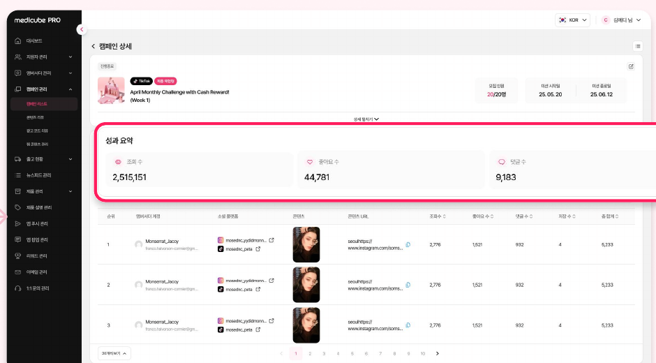

타사 인플루언서 관리 플랫폼에 매년 지불하던 비용을 자체 어드민 구축으로 대체. 캠페인 등록부터 앰버서더 선정, 콘텐츠 리뷰, 성과 집계까지 마케팅팀이 직접 처리할 수 있는 medicube PRO를 설계했습니다.
캠페인마다 인플루언서 지원자 목록을 확인하고, 앰버서더를 선정하고, 업로드된 콘텐츠를 검수하고, 성과를 집계하는 과정을 전부 외부 플랫폼에 의존하고 있었습니다. 기존 플랫폼은 인원이 늘수록 비용이 기하급수적으로 증가하는 구조였고, 주요 기능 위주로만 쓰다 보니 비효율적인 유저 플로우 때문에 실무자가 불편함을 겪고 있었습니다. 동일 업무를 수행하던 담당자들의 실사용 기능을 확인해 병목 지점과 페인포인트를 먼저 정의했습니다.
마케팅팀 캠페인 담당자
타사 플랫폼 연간 이용료, 원하는 형태로 커스터마이징 불가
자체 플랫폼 전환으로 비용 절감, 캠페인 운영 리드타임 단축
지원자의 정보를 빠르게 파악하고, 신규 앰버서더를 선정 및 관리하길 원함
신규 캠페인 생성 및 제출된 콘텐츠에 대한 성과를 효율적으로 파악하길 원함
만약:
그러면:
연간 이용료를 절감하면서도, 마케팅팀 업무 효율은 유지되거나 오히려 개선될 것이다
| 단계 | 내용 |
|---|---|
| Research | 타사 플랫폼 분석 |
| Define | 서비스 주요 기능 확정, 브랜딩 기획 참여 |
| Plan | 화면 설계(Flow) |
| Design | UXUI Design · Prototyping · CBT(내부 테스트) 병행 |
| OBT(UT), QA | Issue Check 및 QA 요청서 작성 |
| Guide | 어드민 사용 가이드 제공 |
| Release | 긴급 이슈 대응 |
자사 브랜드인 'medicube' 글로벌의 브랜드 이미지 및 메인 컬러에 맞춰, Gray 스케일·Pink 메인 컬러·Pretendard 타이포그래피·Desktop 1920/1440px 그리드 규칙까지 색상 정의 및 UI 컴포넌트를 설계했습니다.

핵심 사용자인 '마케팅팀' 니즈에 맞춰 캠페인 유형별로 쉽고 빠르게 캠페인을 생성할 수 있도록 설계했고, 지원자 리스트를 쉽게 선정하고 콘텐츠 리뷰 및 성과까지 빠르게 확인할 수 있도록 디자인했습니다.


지원자 관리 화면에서 앰버서더 '승인' 시 앱의 모든 화면에 접근 권한이 주어지며, 캠페인에 참여할 수 있는 자격이 부여됩니다.

승인된 지원자는 앰버서더 관리 화면에서 기본 정보를 확인할 수 있으며, 캠페인 참여 이력 및 제품 발송 내역 등 기타 히스토리를 확인할 수 있습니다.

앰버서더가 제출한 콘텐츠를 그리드에서 한눈에 확인하고, 개별 항목을 승인·반려 처리할 수 있게 설계했습니다.

조회수·좋아요·댓글 등 핵심 지표를 캠페인 단위로 집계하고, 인플루언서별 상세 성과까지 한 화면에서 확인할 수 있게 설계했습니다.